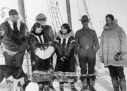
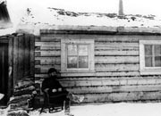
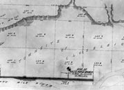
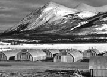
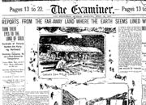
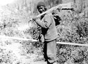
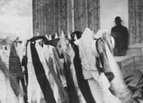

The first newcomers, the fur traders, came to the territory in the middle of the 19th century. Their explorations led to increased interest by the outside world, soon whalers, prospectors, traders and scientists had also started to arrive.
This was a new era: a time of exchanges. The newcomers and the Yukon’s first peoples had many opportunities to learn from each other. Prospectors and traders followed aboriginal travel routes, hired native packers and adapted local clothing and tools. First Nations people gained access to new technologies — weapons, materials, utensils, clothing and foods — that had a profound effect on their lives. Change also brought new problems: disease, conflict, poverty, crime and family breakdown.
The presence of the newcomers, many of them Americans, made the Canadian government realize that it had to assert control over this remote area. The federal government had not established treaties with the resident Indian population, as in other parts of the country. The North-West Mounted Police were sent here in 1894 as the first ‘official’ notice that the Yukon was, in fact, part of Canada.
With the discovery of gold in the Klondike, these gradual adaptations accelerated almost overnight. Thousands of gold-seekers flooded into the Yukon, stretching resources and straining existing relationships. New businesses and services plus the increased speed and power of new technologies radically altered the Yukon. The territory’s population continued to change and diversify through the years to the Second World War and into the present day.
“When we left, the young officer told me that since the previous May 18,000 men had passed [Tagish] post and I was the 631st woman. He numbered our boat 14,405.”
Martha Louise Black
July, 1898
Continue to Transportation and CommunicationNewcomers
(Above) Dalton’s cattle near Montague, n.d. Jack Dalton established a trail from the Pacific Coast to the interior, which followed a Coastal Tlingit trade route. It was the only gold rush trail suitable for transporting livestock.
YA, Puckett collection, 82/344 #33
The crew of the whaler Maid of Orleans pose with Inuit women, c. 1923. Note the whalers’ clothing.
YA, Pasley collection #9211
North-West Mounted Police Sergeant M.H.E. Hayne outside his quarters, Fort Constantine, 1895. The fort was built that year at the mouth of the Fortymile River and was the first official government structure in the Yukon.
YA, Strickland collection #9404
As more newcomers arrived, communities became established and more structured. This is one of the first surveys of Whitehorse, c.1899.
YA display, “Whitehorse Remembered”, 1975
During the building of the Alaska Highway, construction crews called these Quonset huts home. Carcross, c.1943.
YA, Finnie collection, 81/21 #148.11
News of the finds in the Klondike brought world attention to the Yukon. The morning edition of the San Francisco Examiner, Sunday, July 18, 1897.
YA, microfilm collection
Man from Rampart House with rifle in leather case, 1911. First Nations people readily adapted to new technology and new materials brought by outsiders.
Hudson’s Bay Company Archives, Public Archives of Manitoba 1987/363-1-42/8
Potlatch at Teslin, c.1942. First Nations populations were often decimated by diseases introduced by newcomers. In Teslin in the 1940s there was an outbreak of diptheria, brought by soldiers during the construction of the Alaska Highway.
YA, F. Johnston collection, 79/119 #106